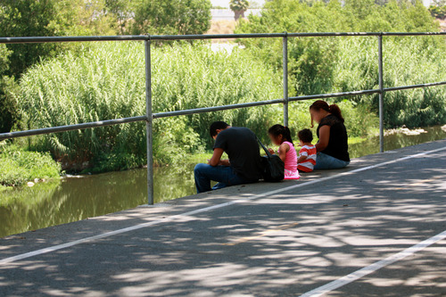

LA River Revitalization / Gentrification
The Army Core of Engineers recently approved a $1 billion dollar revitalization plan for the Los Angeles River. Promoted by Mayor Eric Garcetti, the plan proposes to revitalize 11 miles of the river from Griffith Park to Downtown Los Angeles through habitat restoration, river widening, the creation of wetlands and providing access points and bike trails along the river.
However, environmentalists and communities along the river have raised concerns that development interests will take over the process. Public access and environmental concerns may be sidelined to give wealthier residents of Los Angeles pleasant places to live, work and shop. There are also concerns that the Brown Act, which requires open meetings and actions of legislatives bodies, was violated at some local public meetings.
Additionally, residents of Lincoln Heights, Elysian Valley and Cypress Park have voiced fears that they are unable to afford rising rents and home prices and will be forced to relocate.
Affordable housing is a concern for Los Angeles residents. When housing costs rise above 30% of a family’s income, housing affordability is a problem. In Los Angeles, 93% of the renting population spends more than one third of their income on rent. A high percentage of renters populate the communities most affected by the river project: Lincoln heights - 75.9%, Elysian Valley- 52.2%, and Cypress Park - 58.3%.
Historically, revitalization projects in Los Angeles have marginalized low-income Latino renters. In Chaves Ravine, land was taken away and housing promised by local officials never came to fruition. The predominantly Latino communities of Hollywood, Silverlake and Echo Park have been gentrified and most low-income renters, some of whom had lived there for over fifty years, driven out by steep rent increases. While the Los Angeles Rent Stabilization Ordinance permits rent increases of only 3% annually in multi-family units built before 1978, there is no rent control for single family homes and units built after 1978.
Mayor Eric Garcetti recently stated “Nobody’s houses can be taken. Nobody can be kicked out of rent stabilized apartments close to the river. People in public housing won’t be moved.” But residents are worried, recalling the changes in his 13th Council District that swept much of the low-income Latino population from Hollywood, Silverlake and Echo Park east to Lincoln Heights, Elysian Valley, Cypress Park. As revitalization drives rents higher, they may be prompted to move again.
The river project will affect both home owners and renters. It is important that all communities along the river organize, actively step into the process, and have their voices heard.